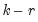
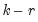

|
|
|
The second part of the output reports results from the second step VAR in first differences, including the error correction terms estimated from the first step. The error correction terms are denoted CointEq1, CointEq2, and so on in the output. This part of the output has the same format as the output from unrestricted VARs as explained in “Estimation Output”, with one difference. At the bottom of the VEC output table, you will see two log likelihood values reported for the system. The first value, labeled Log Likelihood (d.f. adjusted), is computed using the determinant of the residual covariance matrix (reported as Determinant Residual Covariance), using a small sample degrees of freedom correction. This is the log likelihood value reported for unrestricted VARs. The Log Likelihood value is computed using the residual covariance matrix without correcting for degrees of freedom. This log likelihood value is comparable to the one reported in the cointegration test output.
 variables in the VEC as functions of the remaining  variables, where
variables in the VEC as functions of the remaining  variables, where  is the number of cointegrating relations and
is the number of cointegrating relations and  is the number of endogenous variables. Asymptotic standard errors (corrected for degrees of freedom) are reported for parameters that are identified under the restrictions. If you provided your own restrictions, standard errors will not be reported unless the restrictions identify all cointegrating vectors.
is the number of endogenous variables. Asymptotic standard errors (corrected for degrees of freedom) are reported for parameters that are identified under the restrictions. If you provided your own restrictions, standard errors will not be reported unless the restrictions identify all cointegrating vectors.